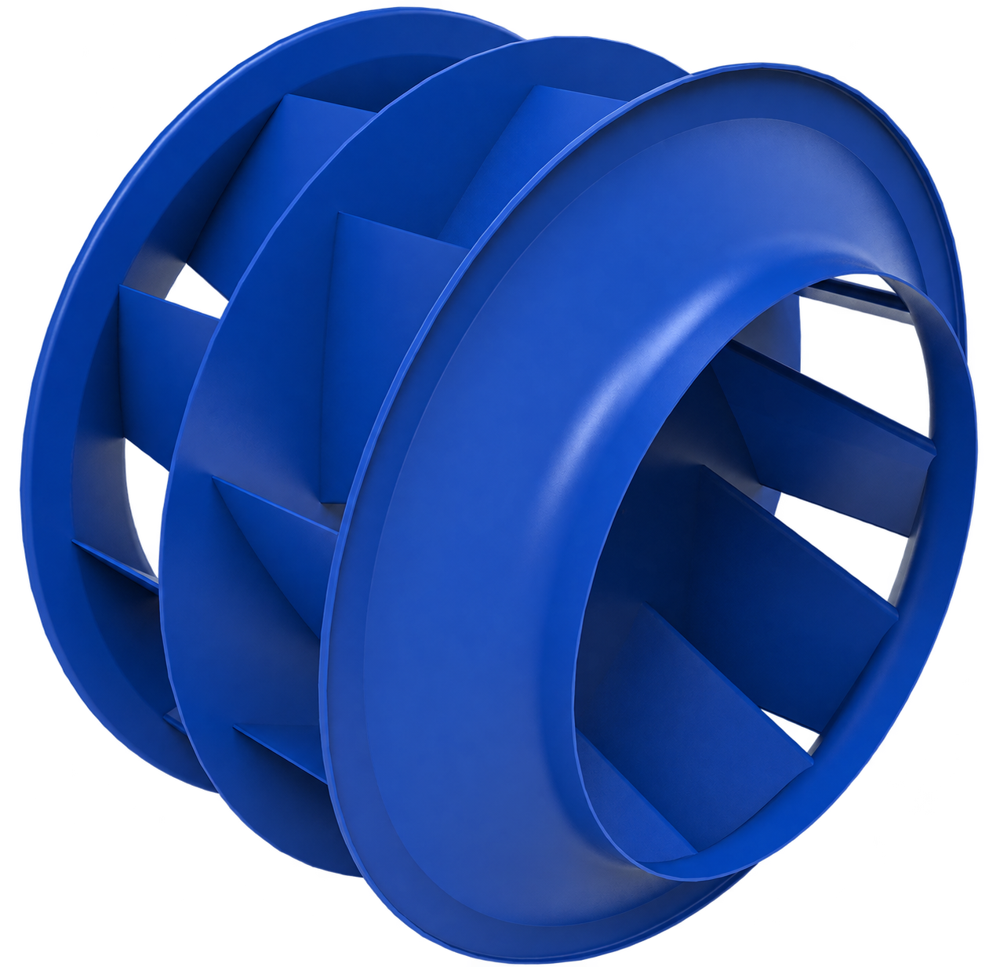
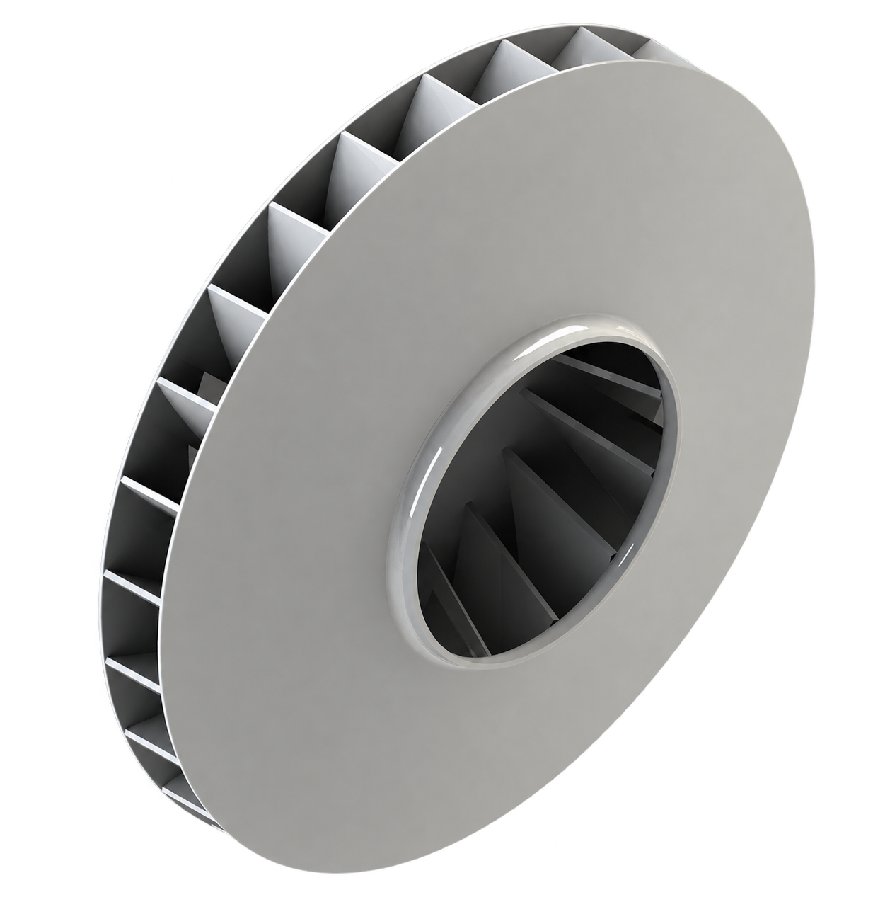

기존 일반 임펠러 대비 효율 개선
HVAC / CATEGORY 01
Ventilation
공기의 흐름을 더 안정적이고 효율적으로 만드는 NOVA의 임펠러 및 팬 제품군입니다.
01 / NEW CONCEPT IMPELLER
Eurus
Impeller
토출 기류를 정돈하는 새로운 접근으로 팬 시스템의 효율과 운전 품질을 함께 개선합니다.
유러스 임펠러는 토출부의 공기 흐름을 고려한 디퓨저 링 설계로 불필요한 손실을 줄이고, 실제 공조 시스템에서 요구되는 압력과 소음 성능의 균형을 지향합니다.
제품 적용 문의 ↗
PERFORMANCE AT A GLANCE
기술은 간결하게,
효과는 분명하게.
공개 가능한 핵심 성능만 정리했습니다. 프로젝트별 상세 선정값과 기술 사양은 상담 과정에서 제공합니다.
운전 소음 저감
최대 정압 성능 향상
표기된 수치는 비교 조건 및 시스템 구성에 따라 달라질 수 있습니다. 실제 적용 성능은 프로젝트별 선정과 검토를 통해 안내합니다.
ENGINEERING CONCEPT
토출 기류를 다루는
디퓨저 링 설계
Flow Guidance
임펠러 토출부에서 확산되는 기류를 보다 안정적으로 유도하도록 설계했습니다.
Balanced Performance
효율, 소음과 정압 중 하나에 치우치지 않는 균형 있는 운전 성능을 목표로 합니다.
System-Oriented
단품 성능뿐 아니라 실제 팬 및 공조 시스템에 적용되는 운전 환경을 함께 고려합니다.
FOR ENGINEERS
토출 측 형상과 디퓨저 링 구성을 통해 성능 곡선의 안정적인 압력 특성을 지향합니다. 상세 형상, 치수 및 선정 데이터는 기술 협의 시 제공됩니다.
02 / DIRECT-DRIVE IMPELLER
Partial
Impeller
모터의 효율적인 회전 영역과 송풍기의 요구 회전수를 연결하는 Direct Drive용 임펠러입니다.
벨트 구동계 없이 동력을 직접 전달하는 구성을 바탕으로 에너지 손실과 유지관리 요소를 줄입니다. 필요한 운전점에 맞춰 임펠러 폭과 구성을 검토할 수 있어, 설비 조건에 유연하게 대응합니다.
제품 선정 문의 ↗
OPERATIONAL VALUE
구동은 단순하게,
운영은 효율적으로.
고객이 제품의 차이를 빠르게 판단할 수 있도록 공개 가능한 운전 가치만 담았습니다. 상세 치수와 선정 데이터는 프로젝트 협의 시 제공합니다.
동력 전달 손실 절감
벨트 구동 손실을 줄이는 Direct Drive 구성 기준
누적 운전 사례
국내외 적용 실적을 바탕으로 검토하는 운전 신뢰성
간결한 구동 구조
별도 벨트·풀리와 관련 베어링 구성을 줄인 설계
CONFIGURATION
현장 조건에 맞춘
두 가지 구성
Single Partial Impeller
Direct Drive 시스템의 목표 회전수와 요구 풍량을 고려해 유효 폭을 구성합니다. 다양한 운전점에 대응하면서 구동 구조를 간결하게 유지합니다.
Double Partial Impeller
양흡입 구성이 필요한 시스템을 위한 확장형 설계입니다. 설비의 풍량과 설치 조건을 함께 검토해 적합한 구성을 제안합니다.
WHY PARTIAL
- 벨트·풀리 점검과 교체 부담 감소
- 구동부 단순화에 따른 유지보수 및 초기 구성 부담 완화
- 분진 발생 요인 감소로 설비 청결 관리에 유리
- 회전체 주변 정비 요소 감소로 작업 안전성 향상에 기여
에너지 절감률과 적용 효과는 운전 조건, 모터 및 시스템 구성에 따라 달라질 수 있습니다. 실제 제품 선정은 요구 풍량·정압과 설치 조건을 기준으로 별도 검토합니다.
03
Ventilation Product
Pull-Out Impeller
제품의 핵심 가치와 적용 정보를 다음 단계에서 이 페이지 안에 이어서 추가합니다.
Content in Preparation04
Ventilation Product
Fan Model 라인업
모델 구성과 선택 기준을 다음 단계에서 이 페이지 안에 이어서 추가합니다.
Content in Preparation